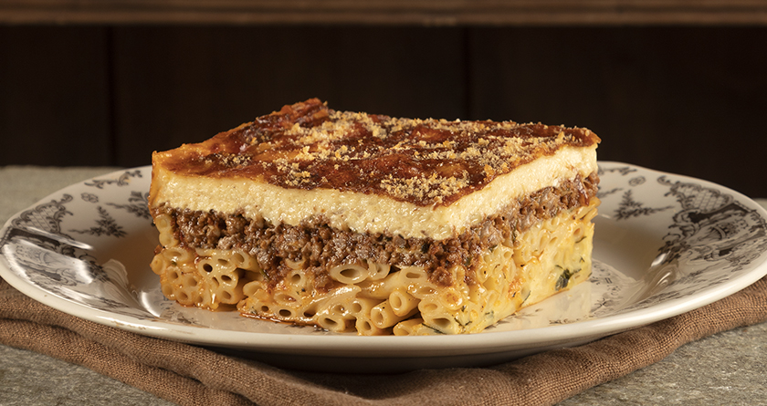

Pastitsio

Ingredients:
- 450g/ 15oz. bucatini pasta, penne or ziti
- 110g/ 4oz. feta cheese
- 2 egg whites
- 900g/ 30oz. lean ground beef
- 2 medium sized red onions (finely chopped)
- 2 cloves of garlic (chopped)
- 400g/ 14oz. canned chopped tomatoes
- 1 tbsp tomato paste
- 1 tsp sugar
- 150ml/ 5 fl.oz. red wine
- 1 bay leaf
- 1 cinnamon stick
- 1 whole clove
- 1/4 of a cup olive oil
- 2 teaspoons sea salt and freshly ground black pepper (to taste)
- 120g/ 4.3 oz. plain flour
- 120g/ 4.3 oz. butter
- 1000ml/ 34 oz. milk
- 2 egg yolks
- 50g/ 1.7oz. Kefalotyri or Parmigiano-Reggiano
- a pinch of nutmeg
- salt to taste
- 50g/ 1.7oz. Kefalotyri or Parmigiano-Reggiano to sprinkle
-
To prepare this traditional pastitsio recipe (pastichio), start with the meat sauce. Place a large pan over medium-high heat and add the olive oil, the chopped onions
and sauté for 2-3 minutes. Add the garlic, tomato paste and the beef. Break up the meat with a wooden spoon and brown for 4-5 minutes. Pour in the red wine and wait to
evaporate. Add the canned tomatoes, the sugar, cinnamon, clove, the bay leaf and season. Bring to the boil, turn the heat down and simmer with the lid on for about 30 minutes,
until most of the juices have evaporated. (After the meat is cooked, discard the bay leaf, the clove and the cinnamon)
- Prepare the bechamel sauce for the pastitsio. Melt the butter in a large pan over low-medium heat. Add the flour whisking continuously to make a paste. Add warmed milk in small
batches, whisking continuously in order to prevent your sauce from getting lumpy. If the sauce still needs to thicken, boil over low heat whilst continuing to stir. Remove the
pan from the stove and add the egg yolks, salt, pepper, a pinch of nutmeg and the grated cheese (50g/ 1.7oz.). Whisk quickly, in order to prevent the eggs from turning an omelette!
Season with salt to taste.
- Cook the pasta for the pastitsio 2-3 minutes less than the package instructions, so that they don’t get mushy after turning out of the oven later. Drain the pasta and stir in
the egg whites and the feta cheese (smashed with a fork) and mix gently with a spatula.
- For this pastitsio recipe you will need a large baking dish, approx. 25*35 cm / 10*14 inch. Butter the bottom and sides of a pan and assemble the pastitsio. Layer the pasta, top
with the meat sauce and even out. Top the pastitsio with the bechamel sauce and smooth out with a spatula.
- Sprinkle the pastichio with grated cheese and bake in preheated oven at 180C (350F) Fan for about 40 minutes, until crust turns a light golden brown. Let the pastitsio cool down
for a while before serving.